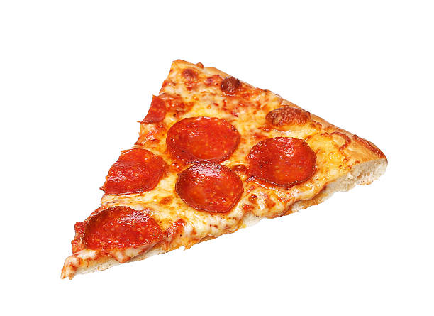

How to Make Pepperoni Pizza

Ingredients:
- any size of frozen dough
- ½ (12 ounce) can Tomato Paste
- 1 teaspoon dried oregano, crushed
- 1 teaspoon dried basil, crushed
- ½ teaspoon garlic powder
- ½ teaspoon salt
Instruction:
- Get It Ready. open the dough and unwrapped it and pat it out and put the cheese and pepperoni on the dough.
- Put It in the Oven. set the oven on 475 degrees put the pizza in the oven and wait 10 to 15 min.
- Enjoy It.